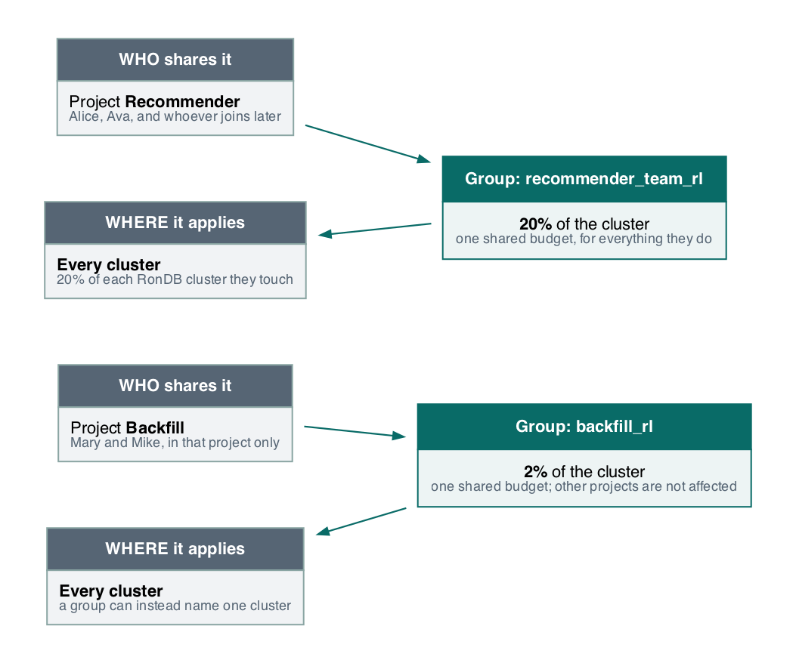
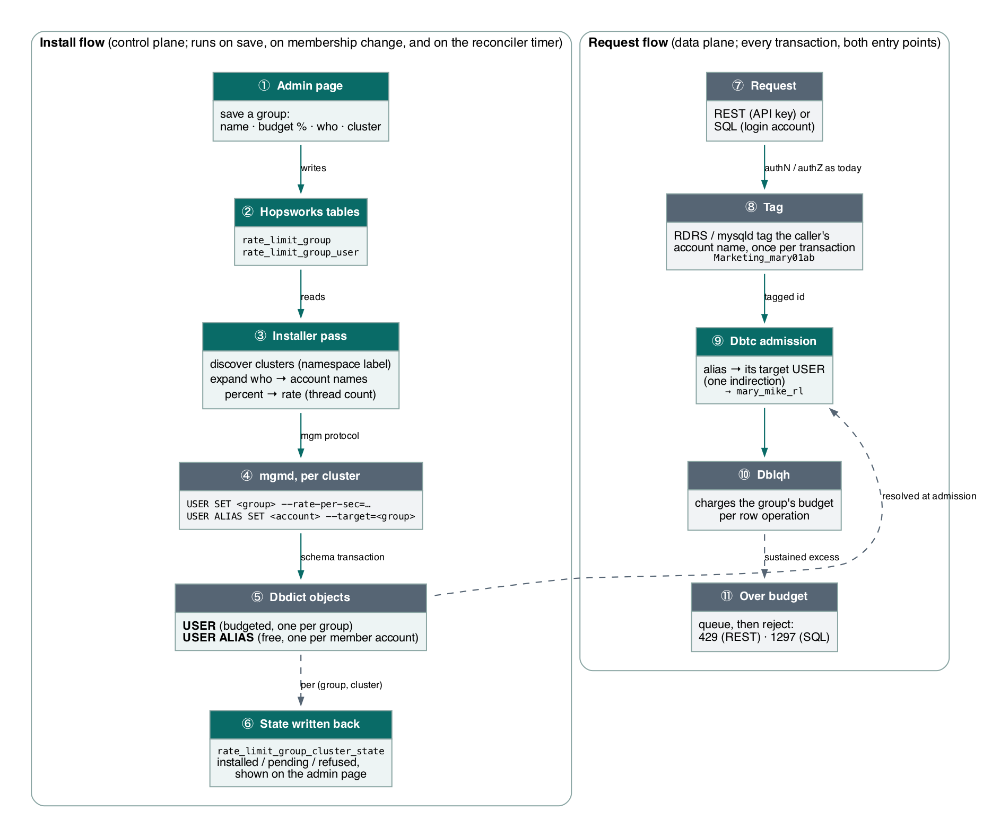
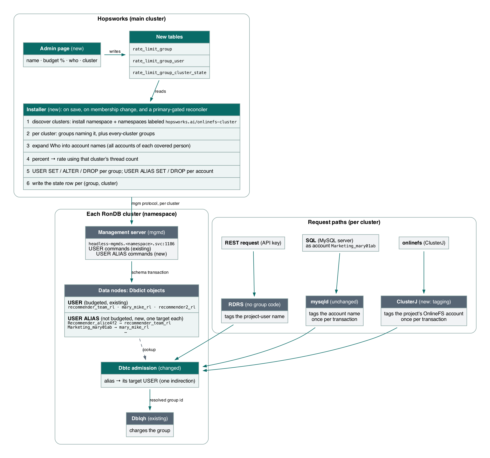
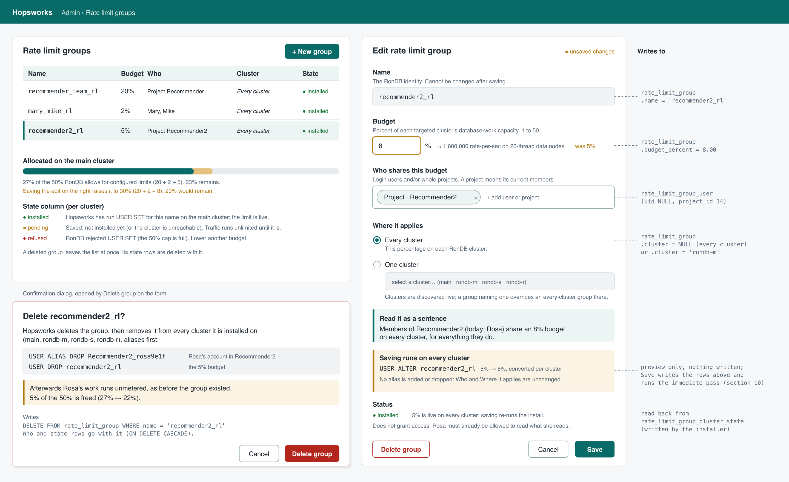
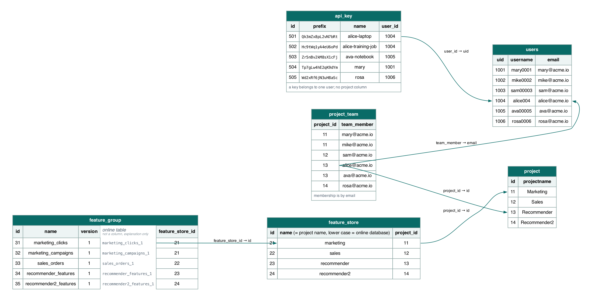
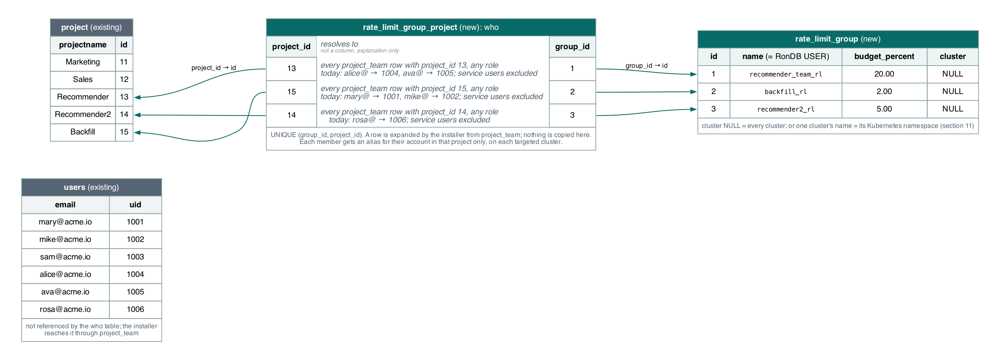
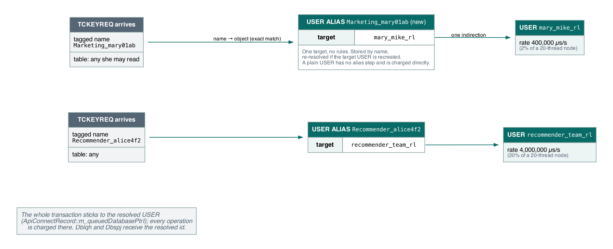
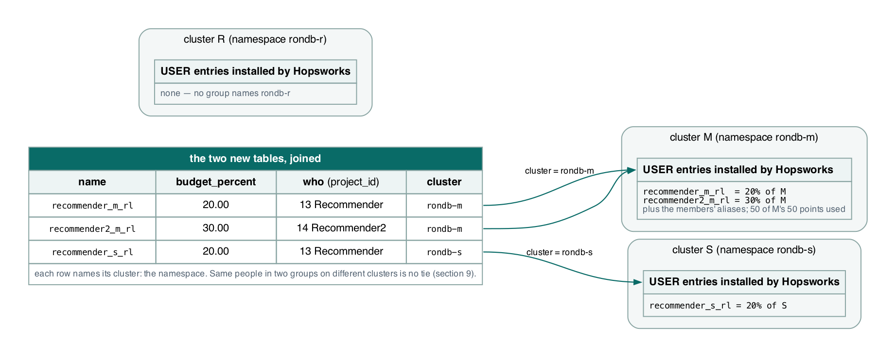
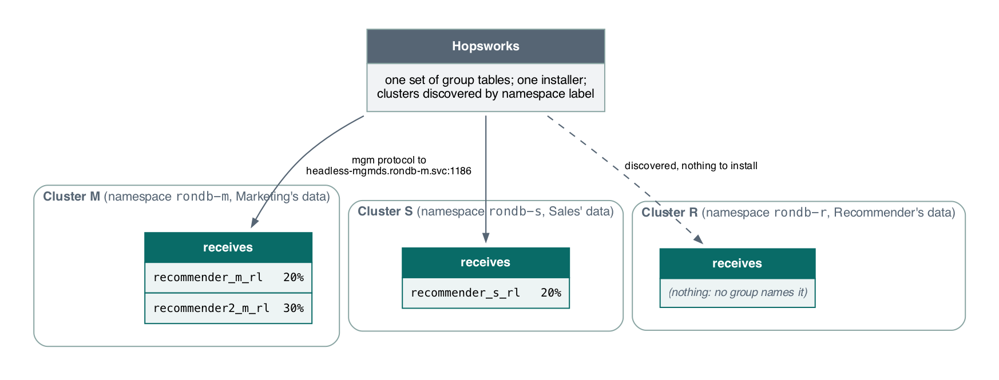

Hopsworks · RonDB · Internal design document · November 2026
Hopsworks OnlineFS Ratelimiting: Design Version 2.0
How a team’s shared budget for the online feature store is stored in Hopsworks, how a request on either entry point, the REST server (RDRS) or the MySQL server, is matched to that budget, and what RonDB enforces. This document separates what is already implemented from what is new, and says how the new parts will be built.
The feature introduces the rate limit group: a named budget shared by a set of login users or whole projects, applied to everything they do on a RonDB cluster. A group covers every cluster, or names one. Hopsworks stores groups in two new tables and installs them on the right cluster itself, through the management-server client it already has. Every transaction, whether it enters through RDRS with an API key or through the MySQL server with a database account, is tagged with the caller’s account name, and a RonDB alias maps that name to the group’s budget, which RonDB charges using the per-name rate limiting it already has.
The document is written for a system architect, in three parts of increasing depth. Part I is the bird’s-eye view: the feature, the end-to-end flow, and the admin page. Part II is the design: the existing machinery it stands on, the data model, both request paths, the installer, the save rules, and multi-cluster deployments. Part III is the technical reference: the kernel changes, the enforcement mechanics, the build plan, the open decisions and the exact definitions. Each part is self-contained enough to stop after. The document is built around one worked example, four projects sharing a single RonDB cluster, introduced in section 6. The customer white paper Hopsworks OnlineFS Ratelimiting (version 2.0) describes the same feature without the internals.
Part I
The design at a glance
What the feature is, how it works end to end, and what the administrator sees. Enough to evaluate the shape of the design; every claim here is grounded in a Part II or Part III section that carries the detail.
1. The feature
A rate limit group is a named ceiling on how much of a RonDB cluster a set of people may use. It has four properties: a name (the identity RonDB meters), a budget as a percentage of a data node’s database-work capacity, a Who list (named login users and/or whole projects), and a cluster (one by name, or every cluster). The budget covers everything those people do on that cluster: every entry point (REST, SQL, ClusterJ and, from phase 2, OnlineFS ingestion), every account they hold, own data and data shared with them alike.

What a group deliberately is not bounds the whole design. It is not a permission: listing someone in a group does not let them read anything new. It is not a reservation: 20% is a ceiling, not guaranteed capacity. And it has no data dimension: a group never names a feature group or a feature store, so there is no per-table state anywhere, and a person is in at most one group per cluster, so there is never a choice of which budget to charge. (Version 1.0 had the data dimension; the header note records why it is gone.)
2. The flow, end to end
Two flows make the feature, and they meet only inside the data nodes. The install flow is the control plane: it turns saved group rows into RonDB dictionary objects, and all of it runs in Hopsworks. The request flow is the data plane: it runs on every transaction, almost all of it already exists from the per-identity rate limiting of RONDB-978, and this design adds exactly one indirection to it (step ⑨).

USER and USER ALIAS objects on each targeted cluster, and the outcome is written back for the admin page. ⑦–⑪ the request flow: every transaction is tagged with the caller’s account name and the work is charged to the group’s budget.The install flow (①–⑥). An administrator saves a
group on the admin page (①); the save writes rows into two hopsworks
tables (②) and triggers an immediate install pass (③). The installer, inside
Hopsworks, discovers the clusters by namespace label, expands the Who list into the
members’ MySQL-account names, and converts the percentage into a RonDB rate using each
cluster’s own thread count. It then issues USER SET (the group’s budget,
one per group) and USER ALIAS SET (one per member account, pointing at the
group) through each targeted cluster’s management server (④), which stores them
as dictionary objects on the data nodes (⑤). The outcome per (group, cluster) is
written back to a state table (⑥), which is what the admin page shows. The same
pass re-runs when project membership changes and on a primary-gated timer, so every
cluster converges back to the tables after a missed event, a restore or an outage
(section 10).
Changing and deleting a group is the same flow. There is no separate
update path: every later change re-enters the install flow at step ③ and the pass
converges each targeted cluster to the tables. A changed budget re-converts the
percentage and alters the group’s existing USER in place; no alias moves.
A changed Who list or cluster field becomes alias commands computed from the difference:
USER ALIAS SET for each person now covered, USER ALIAS DROP
for each person no longer covered, and a person moving between groups gets a DROP then a
SET, because the kernel refuses pointing an existing alias at a different target (13.3).
Deleting a group runs the pass with the rows gone: the installer drops the members’
aliases, then the group’s USER, and the members’ traffic falls back to
unmetered (section 11).
Implicit changes travel the same way, without an administrator. A
project Who row is a rule, “everyone in this project”, and membership keeps changing
after the group is saved. Suppose a group gives everyone in project Recommender 2% of a
cluster, and Bob later joins the project. Hopsworks creates his MySQL account exactly as
it does today (5.3), and the operation-log callback that creates the account also checks
whether any group covers the project. One does, so the handler issues
USER ALIAS SET Recommender_bob91cd --target=recommender_team_rl on each
targeted cluster, with the framework’s retries. One alias appears; the budget and every
other alias are untouched, and Bob’s REST keys and SQL logins are metered from that
moment. When Mary is removed from a covered project, the same callback sees her account
removal and issues USER ALIAS DROP for that account on the affected
clusters; her remaining traffic is unmetered again, or keeps charging whichever other
group still covers her. A missed callback, for example across a Hopsworks restart, is
repaired by the periodic reconciler, which replays the full pass and converges every
cluster back to the tables (section 10). The asymmetry is
deliberate: an alias arriving late only delays metering, while a limit outliving its
group would throttle someone wrongly, and the reconciler exists to prevent the
second.
The request flow (⑦–⑪). A request is authenticated
and authorized exactly as today (⑦). RDRS, the MySQL server and ClusterJ
applications tag the transaction with the caller’s account name, once per
transaction (⑧); the same person is the same string on every entry point, and from
phase 2 an OnlineFS ingestion write carries the account of the user who produced it
(13.4). Dbtc resolves the tagged name at admission, and when
the name is an alias, swaps it for the group’s USER, one pointer
dereference (⑨). Dblqh charges the work to that budget per row operation
(⑩); sustained excess queues and then rejects, 429 on REST and error 1297 on SQL
(⑪). A name with no alias runs unmetered, which is today’s behavior, so the
feature is inert until groups are installed.

USER and USER ALIAS objects on each targeted cluster. The request paths (right) tag transactions with the account name; Dbtc swaps the alias for its group; Dblqh charges it.The component view places the new work: everything new on the Hopsworks side is the page, the tables and the installer; everything new on the RonDB side is the alias object and its one-step resolution. RDRS and the MySQL server only tag, and carry no group logic of any kind.
3. The admin page
One page: a list of groups on the left, and a form for the selected group on the right. Each form field writes to exactly one table, shown in the right margin. The list also shows the per-cluster install state written back by the installer (section 10), so an administrator can see when a saved group has actually been installed.

recommender2_rl: the budget is raised from 5% to 8% and not yet saved, and the form shows the command saving will run. Bottom left, the confirmation that Delete group opens. “Every cluster” is the default; naming one cluster scopes the budget to it. The right margin names the table and column each field writes.Three details carried from the design sections: the name is read-only after creation
(renaming would drop and recreate the RonDB entry); the budget field shows the converted
rate-per-sec per targeted cluster so the administrator sees what each
cluster will receive; and the sentence preview restates the group in words, which is the
quickest check that Who and the cluster were filled in as intended. The cluster picker
is fed from the live discovery (5.4), so it offers exactly the
clusters that exist.
Editing and deleting. Every field except the name is editable, and
saving an edit is the same write as creating: the rows change and the immediate install
pass runs, so the list’s per-cluster state shows the outcome of the new pass within
seconds (section 2). A budget edit alters the group’s
USER in place; a Who or cluster edit adds and drops only the affected
aliases. Before Save, the form lists the commands saving will run, and the allocation
bar shows the total the edit would reach, so a raise that would meet the 50% cap is
visible before RonDB refuses it. Deleting a group removes its rows, its Who rows and its
state rows, and the immediate pass drops the group’s USER and its members’ aliases on every
targeted cluster; the members run unmetered afterwards (section 11).
Delete group first opens a confirmation naming the aliases and the USER it
drops and whose work goes unmetered; once confirmed, the group leaves the list at once,
because its state rows go with it.
Membership churn never passes through this page: when someone joins or leaves a covered
project, the operation-log handler adjusts the aliases by itself (section 2) and the
page keeps showing installed. The state column is therefore the
administrator’s check for every kind of change, explicit or implicit.
4. What exists and what is new
The feature is mostly assembly of parts that already exist. The table is the map of the document: each row says where the part is described and whether it is implemented.
| Part | Status | Where | Section |
|---|---|---|---|
Per-name rate limiting in the data nodes (USER SET, cost metering, queueing and rejection, the 50% cap) | Implemented, RonDB 26.02 | Dbdict, Dbtc, Dblqh, mgm server | 5.1, 14 |
| Transaction tagging from RDRS by API key | Implemented, 26.02-main | RDRS | 5.2 |
| Transaction tagging from RDRS by project-user name (username mode) | Implemented on branch RONDB-1158 (merged from RONDB-978-Cont) | RDRS | 5.2 |
| Transaction tagging from the MySQL server by login account | Implemented, 26.02; off by default | ha_ndbcluster | 5.2 |
One MySQL account per project member, named Project_username | Implemented | Hopsworks | 5.3 |
| Hopsworks speaks the management-server protocol; cluster discovery by namespace label | Implemented (quotas; backups) | Hopsworks | 5.4 |
| The two group tables and the admin page | New | Hopsworks | 7, 3 |
| The alias object: tagged name → group, for all paths | New | Dbdict, Dbtc, mgm server | 9, 13 |
Transaction tagging from ClusterJ (a session setting that reaches setUserId) | New | ClusterJ, ndbjtie | 5.2, 13.4 |
| OnlineFS ingestion tags the producing user’s account | New, phase 2 | clusterj-onlinefs | 5.2, 13.4 |
The installer and reconciler that turn rows into USER and USER ALIAS objects on the right cluster | New | Hopsworks | 10 |
Turning the switches on (ndb_user_rate_limits, ActivateRateLimits) | New configuration | rondb-helm | 15 |
Part II
The design
The existing machinery the feature stands on, the worked example, the data model, both request paths, the installer, the rules Hopsworks enforces on save, and what changes when a deployment has several RonDB clusters. Each decision is stated with the alternative it displaced.
5. What exists today
5.1 RonDB meters work per name
Since RonDB 26.02 the data nodes can put a budget on a name:
ndb_mgm> USER SET etl_jobs --rate-per-sec=10000All database work tagged etl_jobs may then use 10,000 microseconds of
CPU per second on each data node, about 1% of one thread. A USER is a
dictionary object stored as $name in the same namespace as
DATABASE QUOTA objects (Dbdict.cpp:33182). The client resolves
the name to an object id once (ClusterMgr::retrieveUserId,
ClusterMgr.cpp:1535, a cache filled from LIST_DATABASE and
refreshed every 60 s) and sends only the id; Dbtc admits or queues at
TCKEYREQ, SCAN_TABREQ and TCINDXREQ; Dblqh charges
per row operation (update_rate_usage, DblqhMain.cpp:40541). An
unknown name runs unmetered. The full mechanics, the cost model and the 50% cap are in
section 14.
5.2 Two entry points, one identity
Data in the online feature store is reached through two servers, and each already tags the NDB transactions it starts:
| Entry point | Caller identified by | What is tagged today | Status |
|---|---|---|---|
| REST server (RDRS) | API key → api_key.user_id → login user; project memberships from project_team by the user’s email | The API key (apikey mode), or the project-user name clip31(ProjectName_username) (username mode) | apikey mode merged on 26.02-main; username mode on the RONDB-1158 branch |
| MySQL server | The login account, one per project member (5.3) | The account name, no host: security_context()->user() in ha_ndbcluster::set_user_id (ha_ndbcluster.cc:7756) | 26.02; behind the read-only server variable ndb_user_rate_limits, default OFF |
Three properties of the MySQL server’s tagging shape everything that follows:
- Once per transaction, before any table is known. All handlers in a
session share one
Thd_ndb::trans;set_user_idruns right afterstartTransactionin each of the four places a transaction is started (ha_ndbcluster.cc:7786,7819,7853,7875). AJOINor aBEGIN … COMMITblock carries one tag. - The login name only. No host part, not the privilege user. Inside
a routine declared
SQL SECURITY DEFINERit is the definer. - Off by default, and internal work is untagged. Both
ndb_user_rate_limits(mysqld) andActivateRateLimits(data nodes,common/mgmcommon/ConfigInfo.cpp:650) default to off. The binlog thread, schema distribution and stored-grant replication never tag.
Online ingestion (onlinefs) writes through ClusterJ and tags nothing today.
The NDB API call exists (NdbTransaction::setUserId,
NdbTransaction.hpp:573; it is what mysqld and RDRS use), but ClusterJ does
not expose it to Java. This design brings the path in scope in two phases. Phase 1:
ClusterJ gains a session setting for the tag (13.4), with tests that drive a
rate-limited cluster from Java. Phase 2: the OnlineFS application
(clusterj-onlinefs) tags
each write transaction with the account of the user who produced the data (how it learns
that user is open, section 16), so ingestion work is metered through the same alias
mechanism as REST and SQL. Until phase 2, ingestion
runs unmetered, as today.
5.3 Hopsworks creates one MySQL account per project member
When a project’s online feature store is first used, and again whenever a member is
added, Hopsworks creates a MySQL account for each member
(OnlineFeaturestoreController.createDatabaseUser). The name is the project
name, an underscore, and the login user’s username, cut to 31 characters if
longer than 32 (onlineDbUsername, lines 694-700;
ONLINE_FEATURESTORE_USERNAME_MAX_LENGTH = 32). The host part is
'%'. A data owner gets ALL on the project’s database, a data
scientist SELECT. A share grants SELECT on the owner’s database
or table to the receiving project’s member accounts, so a reader of shared data
always connects as their own project’s account.
| Person | users.username | Project | MySQL account | Grants |
|---|---|---|---|---|
| Mary (1001) | mary01ab | Marketing (11) | Marketing_mary01ab | ALL on marketing.* |
| Mike (1002) | mike7c3d | Marketing (11) | Marketing_mike7c3d | ALL on marketing.* |
| Sam (1003) | sam00035 | Sales (12) | Sales_sam00035 | ALL on sales.* |
| Alice (1004) | alice4f2 | Recommender (13) | Recommender_alice4f2 | ALL on recommender.*; SELECT on marketing.*; SELECT on sales.sales_orders_1 |
| Ava (1005) | ava3b7c0 | Recommender (13) | Recommender_ava3b7c0 | same as Alice |
| Rosa (1006) | rosa9e1f | Recommender2 (14) | Recommender2_rosa9e1f | ALL on recommender2.*; SELECT on marketing.* |
The account name is the same string RDRS’s username mode produces
(it builds it with the same clip, byte for byte), so one person
is one name on both entry points. It also decodes back to (project, user) without a
lookup table: project names are at most 25 characters from
[A-Za-z0-9_] with no double underscore
(FolderNameValidator.java:57-67, length at :105-107) and unique
ignoring case (checked before insert in ProjectController.java:740-747; the
database unique key is case-sensitive); generated usernames are exactly eight
lowercase alphanumerics, derived from the email and padded or truncated
(UsersController.java:536-571); service usernames
(onlinefs, srvmanager) contain no underscore. The last
underscore therefore always splits off the exact project name, and at least five
characters of the username survive the clip; the resolver recomputes the clip over that
project’s members and compares.
Collisions exist today and are not solved here. Two members of a
24- or 25-character project whose usernames share their first five or six characters
clip to the same account. Hopsworks has no guard (CREATE USER IF NOT EXISTS
silently reuses the account), the second member’s login already fails, and removing
either member drops the shared account. Such a pair shares one identity for rate
limiting; document it as a limitation of the account scheme.
Service accounts: onlinefs (data scientist) and srvmanager
(data owner) are on every team and get accounts; airflow is on the team but
is filtered out before accounts are created (ProjectUtils.java:361-365) and
has none. One timing caveat: account creation runs in the lazy online-feature-store
setup, which runs once and returns early afterwards
(OnlineFeaturestoreController.java:134-136), and adding a service user
later never calls createDatabaseUser; a service user only has an account if
it was already a member when that setup first ran.
Who uses these accounts: every user-facing SQL path, including the Hopsworks backend’s
own preview and feature-group DDL on the caller’s behalf. Only administrative work (grants,
INFORMATION_SCHEMA, tracing and ingestion-result reads) runs as the admin
account, which is never metered.
5.4 Hopsworks already talks to every RonDB cluster’s management server
New in this revision: the inventory of the Hopsworks-side machinery that section 10 builds on. All of it is in production today.
- The management-server client.
RonDbManagementClient(hopsworks-common/…/util/RonDbManagementClient.java:52,@Stateless, ~500 lines) speaks the mgmd text protocol over a raw socket. It already issues theDATABASE QUOTAfamily forProjectQuotasController(project create and delete set and drop RonDB quotas through it), discovers the main cluster’s mgmd through service discovery (HopsworksService.RONDB_MGMD, import at:38), and has(host, port)overloads (setQuotasat:224) that take an explicit endpoint, which is what satellite clusters need. TheUSERcommand family it must now also speak uses the same request and reply framing as the quota commands it already sends. - Cluster discovery. A satellite RonDB cluster is a Kubernetes
namespace labeled
hopsworks.ai/onlinefs-cluster; Hopsworks enumerates them with one API call (KubeBackupController.java:74defines the label,:503lists the namespaces; shipped with the HWORKS-2638 backup API, which offers per-satellite backup targets generated from exactly this list). The main cluster’s namespace is theHOPS_HELM_INSTALL_NAMESPACEsetting (KubeBackupController.java:93). Inside each such namespace, rondb-helm creates a stable mgmd Service:headless-mgmds, port 1186 (rondb-helm values.yaml:153-154,templates/mgmd.yaml:127), so a satellite’s management server is reachable from Hopsworks atheadless-mgmds.<namespace>.svc:1186with no registry and no configuration. For externally-managed RonDB, the chart renders anExternalNameServicemgmpointing at the external mgmd (templates/mgmd.yaml:147), reachable only if the deployment’s networking allows it (section 16). - Reacting to membership changes. Hopsworks already runs an async
operation log with retries for exactly the events a group cares about: the
OnlinefsOperationHandlerCDI interface (hopsworks-common/…/async/service/OnlinefsOperationHandler.java:21) deliversonlineFsDbCreateUser/onlineFsDbRemoveUsercallbacks (:33,:46; dispatched fromOperationHandlerHelper.java:200) whenever a member account is created or removed, with the account name and anis_service_userflag.OperationLogTimerretries failed handlers (10 immediate, then exponential backoff), andSupersetUserAccountHandleris the copy template. - Desired-state reconciliation.
TrinoReconciler(hopsworks-common/…/trino/TrinoReconciler.java:73) is the house pattern for a periodic repair loop: a@Singletontimer on every instance whose@Timeoutbody gates onamIThePrimary()(PayaraClusterManager), so exactly one Hopsworks instance reconciles, plus a Hazelcast topic for an on-demand trigger.
6. The scenario, and what Hopsworks already stores
In Hopsworks a project is a team’s workspace: it has members and owns a
feature store, the project’s collection of feature groups
(tables of features). A project can share its whole store, or single feature groups, with
other projects. In RonDB a feature store is one database named after the project in lower
case (marketing), and each online feature group is a table in it named
<name>_<version> (marketing_clicks_1).
The example has four projects on one RonDB cluster. Marketing has shared its feature
store with Recommender and with Recommender2. Sales has shared sales_orders
with Recommender.
| Project | Members | Feature groups it owns | Shared with |
|---|---|---|---|
| Marketing | Mary, Mike | marketing_clicks, marketing_campaigns | Recommender, Recommender2 (whole store) |
| Sales | Sam | sales_orders | Recommender (that one feature group) |
| Recommender | Alice, Ava | recommender_features | nobody |
| Recommender2 | Rosa | recommender2_features | nobody |
The group tables refer to people and projects by the ids Hopsworks already has. Here are the existing rows the examples will point at:

The shares are in shared_feature_store (store 21 → projects 13 and 14)
and shared_feature_group (feature group 33 → project 13). RDRS already reads
all of these tables to authenticate a key and to decide whether a read is allowed.
Nothing in them changes.
The administrator has three requirements. Group names are free text; the examples end
in _rl (for “rate limit”) so that a group is never confused with the project
it is named after.
| Requirement | Group | Who | Cluster | Budget |
|---|---|---|---|---|
| “Recommender gets 20% of the cluster, whatever its members do.” | recommender_team_rl | project 13 | every cluster | 20% |
| “Mary and Mike together may use at most 2%, so their backfills cannot disturb production serving.” | mary_mike_rl | uids 1001, 1002 | every cluster | 2% |
| “Recommender2 may use at most 5%.” | recommender2_rl | project 14 | every cluster | 5% |
With one cluster, “every cluster” is just that cluster. Version 1.0 scoped the second
and third requirements to named data (“2% on marketing_clicks”, “5% on the
Marketing store”); in this version a budget bounds people on a cluster, not
people on data, and the per-cluster form of the third requirement (“5% of
Marketing’s cluster”) is written with the cluster column in
section 12.
7. The new tables
Two tables in the hopsworks database, plus one state table the installer
writes. They refer to the existing rows above by id and change nothing in the existing
tables. Column definitions are in the appendix.
| Table | Answers the question | One row is |
|---|---|---|
rate_limit_group | Which groups exist, how big is each, and on which cluster? | One group: a name, a percentage, and a cluster (one by name, or NULL for every cluster). |
rate_limit_group_user | Who shares the group? | One person (users.uid) or one whole project (project.id). |
rate_limit_group_cluster_state | Is it live? | One (group, cluster) install state, written by the installer, read by the admin page. |
Here is every row written for the three requirements:

cluster NULL means every cluster. The three budgets add up to 27%, under the 50% cap.7.1 rate_limit_group
nameis the string RonDB meters: each targeted cluster gets aUSER SET <name>entry (section 10). Unique. Renaming would mean dropping and recreating the RonDB entry, so the UI does not allow it.budget_percentis a share of a data node’s capacity. It is stored as a percentage, not as a RonDB rate, and converted at install time, because each cluster converts with its own thread count (section 12).clusteris NULL (“every cluster”) or one cluster’s name, which is its Kubernetes namespace (5.4): the main cluster’s install namespace or a satellite’s labeled namespace. The admin page offers the live list; a name that matches no discovered cluster installs nowhere and shows as pending, never an error, so a group can be created before its cluster.
7.2 rate_limit_group_user
A row sets uid or project_id, never both.
- A uid row names exactly one login user. Nothing is interpreted. Row (1001, NULL) is Mary and nobody else.
- A project row is a rule, not a list. It means “every user who has a
project_teamrow for this project at the moment the installer runs” (team_memberholds an email, not a uid; every role counts;team_roleis not consulted). The service usersonlinefsandsrvmanagerare excluded from this person expansion by username: they are on every team and carry ordinary roles. Membership changes write nothing here: when Bob joins Recommender he is covered after the next install pass, and when Ava leaves she drops out the same way (section 10).
A group covers people, and a person is covered with every account they
hold. Alice in a group means: her account in every project she is a member of
(Recommender_alice4f2 today, more if she joins other projects), because her
work charges her team’s budget whichever of her accounts it arrives under, on either
entry point. Why people and not API keys? A key has a
user_id and no project. RDRS already turns a key into its owner, so “is this
key in a group?” becomes “is Alice in a group?”, and the answer is the same for key 501,
key 502 and the key Alice creates tomorrow. Keys never appear in the new tables.
Why people and not accounts? The account is derived from (project, user)
and is recomputed by the installer; storing it would be a second copy that drifts.
7.3 rate_limit_group_cluster_state
One row per (group, cluster) the installer has acted on: pending,
installed, refused (the 50% cap is full,
CreateDbNoAvailableRates), with a timestamp. The installer writes it in the
same pass that issues the commands (section 10), the admin page reads it (section 3).
Version 1.0 left “where the state is stored” open because RDRS, in C++, would have had
to write it back over an NDB connection; with Hopsworks as the installer it is an
ordinary JPA row.
7.4 Who gets charged for what
| Who reads what | Charged to | Why |
|---|---|---|
Alice reads recommender_features_1 | recommender_team_rl | Alice is in project 13; everything she does draws from the team budget. |
Alice reads marketing_clicks_1 | recommender_team_rl | Same. Borrowed data is no different: the budget follows the person. |
Ava reads sales_orders_1 | recommender_team_rl | Same group; Alice and Ava share the 20%. |
Mary reads marketing_clicks_1 | mary_mike_rl | Mary (1001) is listed; all her work draws from the 2%. |
Mary reads marketing_campaigns_1 | mary_mike_rl | Same: the cap is on Mary, not on a table. |
Rosa reads marketing_clicks_1 | recommender2_rl | Rosa is in project 14. |
Rosa reads sales_orders_1 | rejected | Sales never shared with Recommender2. Authorization fails before any group is considered. |
Sam reads sales_orders_1 | none | Sam is not in any group, so his reads are not limited. |
One person, one group per cluster. Mary draws from
mary_mike_rl for everything; if Marketing also wanted a project-wide group
containing Mary, the two would tie and Hopsworks refuses the save (section 11). The only
sanctioned overlap is across clusters: a group that names a cluster beats a group that
covers every cluster, on that cluster only, which is how “20% everywhere but
30% on cluster M” is written (section 12). The precedence is resolved by the installer
when it writes the aliases; the kernel never weighs two candidates
(section 13).
8. The REST path (RDRS): tag the account name, nothing else
RDRS authenticates an API key and authorizes the read exactly as today, using the
Hopsworks tables it already caches per key prefix (api_key.hpp:175,
refreshed every CacheRefreshIntervalMS, default 180 s, with an NDB event
watch on api_key). In username mode it then tags the transaction with the
caller’s project-user string, the same string the person’s MySQL account is named
(5.3). That is the whole REST-path contribution to this feature:
RDRS carries no group code. It does not read the group tables, holds no
group cache, and runs no sync loop; the alias installed by Hopsworks
(section 10) maps the tagged name to the group inside RonDB.
POST /0.1.0/marketing/marketing_clicks_1/pk-read
X-API-KEY: Qk3mZx8pL2vN7bRt.<64-character secret>| Step | Lookup | Result | Status |
|---|---|---|---|
| 1 | Key prefix Qk3mZx8pL2vN7bRt → api_key row 501; verify the secret against the stored hash. | user_id 1004 (Alice) | exists |
| 2 | 1004 → users.email → every project_team row with that team_member, any role. | member of project 13 | exists |
| 3 | The request names database marketing and table marketing_clicks_1: is project 13 allowed to read it? Not a member of project 11; shared_feature_store has 21 → 13. | allowed | exists |
| 4 | setUserId("Recommender_alice4f2") on the transaction (username mode: clip31 of the caller’s own project and username). | tagged | exists on the branch |
| 5 | Inside RonDB: the name resolves to Alice’s alias; the alias’s target is the USER recommender_team_rl; the work is charged there. | metered | new (sections 9, 13) |
The other keys of the cast walk the same way: keys 501 and 502 both belong to Alice and land on the same alias, as will a third key she creates tomorrow. Where one person’s store share is received into several of their projects, the username branch tags the lowest recipient project id; since every one of the person’s accounts carries an alias to the same group (7.2), whichever account is tagged lands on the same budget, and the v1.0 open decision about that interaction disappears.
Version 1.0 carried an alternative here: RDRS reads the group tables, builds person-to-group and data-to-group maps, and picks the group per request. It was rejected on 2026-11-13 (one mechanism must cover both entry points) and is gone from this version; the v1.0 document records it.
9. The SQL path, and why RonDB maps the name
9.1 The MySQL server cannot pick the group
The server tags the account name, and the account decodes to (project, user) (5.3).
But the server cannot decide which group that person is in: it would need the group
tables, the Hopsworks membership expansion and an event-driven cache of them, which is a
Hopsworks-metadata cache rebuilt inside mysqld (the closest existing template, the
index-statistics listener on ndb_index_stat_head,
ha_ndb_index_stat.cc:1839, shows it can be done and how much machinery it
is). ClusterJ, which is metered too (5.2), would need a second copy. And the tag is
fixed once per transaction (5.2), so whatever mapping is used must be a property of the
name, not of the statement.
9.2 What every path has in common: the tagged name
Every entry point tags the transaction with the same kind of string, a project-scoped
account name: REST and SQL tag the caller’s project-user account, and a ClusterJ
application tags the name it sets, which for OnlineFS ingestion (phase 2) is the
producing user’s project-user account. The data nodes resolve that name to a dictionary object at
every admission point. So the one place a “this person’s work charges that group”
mapping covers REST, SQL and ClusterJ at once is the dictionary itself: an object under
the person’s account name whose only job is to point at the group’s USER.
That is the alias, specified in section 13.

USER; the work is charged there. A plain USER has no alias step and is charged directly.9.3 Mary’s statement, step by step
mysql -u Marketing_mary01ab -p …
mysql> SELECT * FROM marketing.marketing_clicks_1 WHERE click_id = 42;| Step | What happens | Result | Status |
|---|---|---|---|
| 1 | Mary logs in; the server’s security context holds Marketing_mary01ab. | account known | exists |
| 2 | The handler starts an NDB transaction and calls setUserId("Marketing_mary01ab"). | tagged | exists |
| 3 | The NDB API’s name cache maps the name to a dictionary object id. Today only USER objects are in that cache; aliases join it. | id of the alias | exists; aliases listed |
| 4 | TCKEYREQ arrives at Dbtc with that id. | id | exists |
| 5 | The object is an alias. Its target is the USER mary_mike_rl. | USER mary_mike_rl | new |
| 6 | Dbtc records that USER as the transaction’s sticky record (ApiConnectRecord::m_queuedDatabasePtrI) and forwards it to Dblqh, which charges 1.25 µs plus data read. | charged | exists |
Step 5 is the only new work on the request path, and only for names that are aliases: one indirection at admission, no rule evaluation, no table comparison. The same walk for other sessions:
| Session | Tag | Alias target | Charged to |
|---|---|---|---|
| Mary, SQL, any table she may read | Marketing_mary01ab | mary_mike_rl | mary_mike_rl |
| Alice, SQL | Recommender_alice4f2 | recommender_team_rl | recommender_team_rl |
| Alice, REST, RDRS in username mode | Recommender_alice4f2 | the same alias as her SQL session | recommender_team_rl |
| Rosa, SQL | Recommender2_rosa9e1f | recommender2_rl | recommender2_rl |
| Sam, SQL | Sales_sam00035 | no alias | unmetered, as today |
| Hopsworks backend, grants and schema reads | admin account | no alias | unmetered, by design |
9.4 One mechanism for every entry point
The decision of 2026-11-13 (one mechanism must cover both entry points; no REST-only intermediate step) carries over unchanged and now extends to ClusterJ (5.2, 13.4), and this version makes it cheaper: with budgets no longer scoped to data, the alias needs no rules, Dbtc needs no per-table state, and the mapping each cluster holds is exactly one pointer per member account. The whole flow is the pair of pictures in section 2.
10. Hopsworks installs the groups
Tagging a transaction Recommender_alice4f2 does nothing unless the
cluster has that alias, and the alias charges nothing unless the cluster has the group’s
USER. The rows in Hopsworks therefore have to become management commands on
the right clusters, and this is part of the design.
Hopsworks is the installer. It owns the tables, it already speaks
the management protocol to RonDB in production, it already discovers every cluster, and
it already has the retry and reconcile frameworks (5.4). One primary-gated writer
replaces the leaderless fleet of RDRS sync loops that version 1.0 coordinated with
version counters, two-run delete grace and idempotent-conflict rules; most of that
section disappears because its problem (many concurrent writers with possibly stale
snapshots) no longer exists. Version 1.0’s stated reasons for RDRS, no cluster registry
and no Hopsworks-to-cluster path, were both wrong by the time they were written: the
namespace label and RonDbManagementClient predate the design
(header note; 5.4).
The install pass, given a cluster and the group rows:
- Discover the clusters. The main cluster
(
HOPS_HELM_INSTALL_NAMESPACE) plus every namespace labeledhopsworks.ai/onlinefs-cluster(5.4). Each cluster’s mgmd endpoint isheadless-mgmds.<namespace>.svc:1186. - Pick this cluster’s groups. Groups whose
clusteris NULL or equal to this cluster’s name. Where one person is covered by both a named-cluster group and an every-cluster group, the named one wins in that cluster’s RonDB (7.4): the person’s aliases here point at it. - Expand Who into account names. A uid row becomes every account
that user holds,
clip31(projectname + "_" + username)for each of theirproject_teamrows; a project row becomes the same for every member, excluding theonlinefsandsrvmanagerservice users (7.2). - Convert each percentage using this cluster’s data-node thread
count: with 20 threads, 20% → 4,000,000 (section 14). The thread count is read
once per pass from the cluster itself (its
ndbinfo.threadsover the per-cluster JDBC connection Hopsworks already holds, 5.4; or a mgm config read through the same client; implementation’s choice) and never cached across passes, so a resized cluster converts correctly on the next pass. - Read back and fix the differences, in group-id order so a 50%-cap
refusal is deterministic:
USER LISTandUSER ALIAS LIST, then
A changed budget becomesUSER SET recommender_team_rl --rate-per-sec=4000000 USER SET mary_mike_rl --rate-per-sec=400000 USER SET recommender2_rl --rate-per-sec=1000000 USER ALIAS SET Recommender_alice4f2 --target=recommender_team_rl USER ALIAS SET Recommender_ava3b7c0 --target=recommender_team_rl USER ALIAS SET Marketing_mary01ab --target=mary_mike_rl USER ALIAS SET Marketing_mike7c3d --target=mary_mike_rl USER ALIAS SET Recommender2_rosa9e1f --target=recommender2_rlUSER ALTER; a deleted group becomesUSER DROPplusUSER ALIAS DROPfor its accounts; a member who left loses their aliases; a member who moved between groups getsUSER ALIAS DROPthenSET(13.3). The diff is per name, and nothing is dropped to be re-added: editing a Who list from {Mary, Mike} to {Mary, Sam} sends oneUSER ALIAS DROP Marketing_mike7c3dand oneUSER ALIAS SET Sales_sam00035 --target=mary_mike_rl, and Mary’s alias is not touched, so she is metered throughout. Order on each cluster: alias drops, thenUSER DROPs, thenUSER SET/ALTERin group-id order, then aliasSETs in group-id order. Drops go first because a moved alias must be dropped before itsSET(13.3), and because every alias andUSERholds a dictionary object slot (13.5): freeing slots before taking new ones keeps a pass that replaces many members from running out midway. Aliases carry no budget, so their order never affects the 50% cap; budget changes keep group-id order so a cap refusal always lands on the same group. Version 1.0 ran the drops last, behind a two-run grace, because several writers could hold stale snapshots; a single grounded writer needs neither. - Record the state per (group, cluster) in
rate_limit_group_cluster_state: installed on success, refused when the cluster rejects the rate (50% cap), pending otherwise, including for a cluster that is unreachable or not yet discovered.
When the pass runs:
- On save and delete of a group (section 11): the controller triggers an immediate pass for the affected clusters; the admin sees installed within seconds, not at the next tick.
- On membership change: the operation-log handler (5.4) receives the
member account’s create or remove with the account name already computed, checks
whether any group covers that person, and issues just the affected
USER ALIAScommands, with the framework’s retries. A group covering the project picks up the new member here, minutes before any periodic pass. - On a timer: the reconciler (TrinoReconciler pattern, primary-gated
@Singleton, 5.4) replays the full pass on every cluster, repairing entries lost to a cluster restore, a manual drop, a missed event or a cluster that was unreachable earlier, and installing groups onto a satellite that has just appeared under the label.
- Idempotent and single-writer.
USER SETon an existing name and a repeatedUSER ALIAS SETwith the same target are no-ops, so an immediate pass racing the periodic one is harmless. Only the primary instance writes, so the v1.0 multi-writer rules (version-counter short-circuit, two-run delete grace, staleness ties) are not needed. - Deletes are grounded, not grace-counted. The installer reads the group tables in the same transaction-consistent store it is about to reconcile from, so “absent from desired state” is a fact, not a possibly stale snapshot. Two rules carry over from v1.0: drop only what the installer owns, and never drop anything in a pass whose reads failed; an unreachable cluster or a failed query skips the cluster and leaves state pending.
- Ownership is decided against the group table. A
USERis the installer’s when its name is arate_limit_group.name; an alias is the installer’s when its target is. That is what lets an edit drop a removed member: Mike’s Who row is gone after the edit, but his alias still points atmary_mike_rl, which is in the table, so the pass drops it. AUSERor alias an operator created by hand, naming or targeting something outside the table, is never touched. The same rule cannot see a deleted group, whose name has left the table: only the delete’s own immediate pass, which the controller hands the deleted name, drops itsUSERand aliases, and a cluster that pass cannot reach keeps them (section 16). - Propagation delay. A saved group is live after its immediate pass plus the client name-cache refresh (up to 60 s, section 13). A new member is live after the operation-log handler fires. Until then that traffic runs unlimited and the page shows pending; a limit appearing late is the designed failure mode, a limit outliving its group is not.
- Unreachable clusters. A cluster whose mgmd Hopsworks cannot reach, which includes externally-managed RonDB without network access to its mgmd, keeps its groups pending and is retried by the reconciler. This matches what database quotas already do for such clusters (section 16).
11. Rules when saving and deleting
| Rule checked by Hopsworks on save | Example |
|---|---|
| A Who row names a person or a project, not both; a group has at least one Who row. | A row with uid = 1001 and project_id = 11. Rejected. |
No ties: two groups with the same cluster scope may not cover the same person. A person is “covered” by a project row if they have any project_team row for that project. A named-cluster group and an every-cluster group may overlap: the named one wins on its cluster (7.4). | Group X: {Mary}, every cluster. Group Y: {project 11}, every cluster. Mary is in both. Rejected. Group X: {project 13}, every cluster, 20%. Group Z: {project 13}, cluster M, 30%. Allowed: on M the members charge Z, elsewhere X. |
| Budget between 0 and 50. RonDB will not accept one entry above 50%. | A group at 60%. Rejected. |
| The cluster name, when set, should name a discovered cluster; a free-text name is accepted but flagged. | A group on cluster mrketing (typo). Saved, shown pending with a “no such cluster” hint. |
The no-ties check also has to run when someone joins a project, because joining can create an overlap that did not exist at save time: a group for project 13 and a group for project 11 are both valid until Alice joins Marketing. Hopsworks then has to either refuse the membership change with a message naming the two groups, or accept it and mark both groups as conflicting on the admin page. Refusing is simpler and is the proposal. Whether all budgets add up under 50% on a given cluster is checked by RonDB when the entry is installed; Hopsworks can warn, and the installer surfaces a refusal (refused state).
Who may create groups is a product decision; they live under Hopsworks administration, and nothing in the model requires more than one role.
What happens when something is deleted
| Deleted | Example | Result |
|---|---|---|
| A group | Admin deletes mary_mike_rl. | Its Who rows and state rows go with it. The immediate pass runs USER DROP and drops the aliases. Mary’s and Mike’s work falls back to unmetered. |
| A person or project | Mike leaves the company; user 1002 is deleted. | His row in group 2 disappears (FK cascade). The group now covers only Mary; his aliases are dropped by the next pass. Harmless. |
| Nothing, but membership changes | Bob joins Recommender. | No group rows change. The operation-log handler sees Bob’s new account and, because project 13 is in group 1, issues his USER ALIAS SET; his keys and SQL logins are covered from that moment. |
| A cluster | The satellite namespace for cluster M is torn down. | Groups naming M show pending (not discovered). Nothing is dropped anywhere else; recreating the namespace reinstalls on the next reconcile. |
12. One cluster or several
Everything above is written for the single-cluster case: one RonDB cluster holds the
hopsworks database and every project’s online data, one RDRS and one set of
MySQL servers sit in front of it. Some deployments add a RonDB cluster per large project
(a satellite: a full RonDB cluster in its own labeled namespace, 5.4). The
design is the same; this section says what differs.
| One cluster | Several clusters (main + satellites) | |
|---|---|---|
Where the hopsworks database lives | on the main cluster | on the main cluster only; the group tables live with it, and only Hopsworks reads them |
| Where a project’s online database lives | on the main cluster | on the project’s satellite (or on main) |
| How a cluster is named | its namespace; the column can stay NULL | the labeled namespace (5.4); the admin page’s cluster picker lists them |
| Which groups are installed where | all of them | per cluster: groups naming it, plus every-cluster groups (minus the per-person overrides of 7.4) |
| What a percentage means | % of this cluster’s data nodes | a named-cluster group: % of that cluster; an every-cluster group: N% of each cluster |
| Percent → rate | this cluster’s thread count | each cluster’s own thread count, read from that cluster (section 10) |
| The 50% cap | one pool | one pool per cluster; install in group-id order so a refusal is deterministic; the state table shows the refusal per cluster |
| Where Alice’s request for Marketing’s data arrives | the cluster | the RDRS or MySQL server in front of the cluster holding Marketing’s data; routing a request to the right cluster is a pre-existing platform question |
The owner of each cluster can then say “Recommender may use 20% of my cluster, Recommender2 30%”: one group per consuming team, naming the cluster. The budget bounds everything those people do on that cluster, which on a satellite hosting one project’s data is precisely “what they may burn on our data”, with no data rows needed:


Version 1.0 expressed “20% of M” by scoping the group to data hosted on M, because no
row could name a cluster, and reserved an override table for per-cluster sizes of ALL
groups. The cluster column is both: a named-cluster group is the override
(7.4), and the override table is gone. Two v1.0 rules survive with the installer:
never USER DROP on a cluster because a read failed, and never decide from a
stored copy of where data lives; the only cluster facts used are the live namespace list
and the live thread count.
Part III
Technical reference
The kernel changes and the enforcement machinery they hand the work to, the build plan, the open decisions, and the exact table definitions and management commands. For implementers and reviewers.
13. RonDB changes: the alias
Everything in this section is new. It builds on four facts about the 26.02 implementation:
- Names resolve on the client.
ClusterMgr::retrieveUserIdkeeps a hash filled from aLIST_DATABASEwalk withis_user=1, kept current byCREATE/DROP_DATABASE_REPand a full re-list every 60 seconds. Only a 32-bit object id and version go on the wire (TcKeyReqbit 29,ScanTabReqbit 5). An unknown name returnsRNILand the transaction runs unmetered, once the first list walk has completed; before that,setUserIdpays one blockingGET_DATABASE_REQround trip (NdbTransaction.cpp:546-570), and after a write-rate abort the client refuses that name for one second (ClusterMgr.cpp:1574-1578). - Dbdict stores a
USERas$name, in the same namespace and id space asDATABASE QUOTAobjects; 126 usable characters (the$takes one byte ofMAX_DB_NAME_SIZE), and a name may not itself begin with$. - Dbtc keeps the first record a transaction touches in
ApiConnectRecord::m_queuedDatabasePtrI(DbtcMain.cpp:28676,:16330) and forwards the user id to Dblqh only when that record is a user (LQHKEYREQbit 9,SCAN_FRAGREQbit 27). Dbspj copies it into every child operation. - Object ids are reused lowest-first after a drop, so any state that holds a target by id must be refreshed when the target is dropped and recreated; the alias therefore stores its target by name and re-resolves (13.1).
13.1 The object
A USER ALIAS is a Dbdict object stored like a USER
($name), flagged as an alias, with no budget and
one target: the name of a USER. Resolution is a single
indirection; there are no rules, no scopes and no ordering. No alias means the
transaction runs unmetered, which is today’s unknown-name behavior.
| Property | Behavior |
|---|---|
| Budget | None. Aliases are excluded from m_current_allocated_rate and never count toward the 50% cap (section 14). A thousand aliases cost the pool nothing. |
| Target | Stored as the target’s name, resolved to its object id when the alias is set and re-resolved whenever a USER with that name is created, so a dropped-and-recreated group picks its aliases back up (object ids are reused; a stale id would silently point elsewhere). An alias whose target does not exist currently charges nothing. |
| Name cache | The LIST_DATABASE walk returns aliases alongside users, so mysqld, RDRS and ClusterJ resolve an alias name to its id with no NDB API change. |
| Persistence | Stored in the schema file like quota objects, recreated on system restart, included in USER BACKUP / restore. |
| Name rules | Same as USER: at most 126 characters, no leading $, exact case-sensitive match. An alias and a user may not share a name. |
13.2 Dbtc
At each admission point (TCKEYREQ DbtcMain.cpp:3726,
SCAN_TABREQ :16290, TCINDXREQ :22518),
after the tagged id is resolved to a record: if the record is an alias, its target
USER replaces it as the sticky record and in what Dbtc forwards to Dblqh and
Dbspj. One pointer dereference; Dblqh and Dbspj are unchanged; plain USERs
pay nothing new. There is no per-table state in Dbtc for this feature, no attach or
detach on DDL, and no precedence: whatever two-group arithmetic exists (a named-cluster
group overriding an every-cluster group, 7.4) was already resolved by the installer
before the alias was written.
One adjacent gap: query threads hold no user records in 26.02, because
CREATE_DB_REQ is routed only to the LDM workers
(DblqhProxy.cpp:2080), so user-tagged reads executed by query threads
under-charge. This is a RONDB-978 defect, not part of the alias; the fix (resolve the
user by raw id at charge time under the owning LDM’s hash mutex) is built and under
review on the RONDB-1158-query-threads branch. Group budgets inherit
whichever behavior that review lands.
13.3 Management commands
ndb_mgm> USER ALIAS SET Marketing_mary01ab --target=mary_mike_rl
ndb_mgm> USER ALIAS SET Recommender_alice4f2 --target=recommender_team_rl
ndb_mgm> USER ALIAS DROP Marketing_mary01ab
ndb_mgm> USER ALIAS GET Marketing_mary01ab
ndb_mgm> USER ALIAS LISTA SET creates the alias or confirms it: repeating a SET with
the same target is a no-op, and a SET naming a different target for
an existing alias is refused, so moving an account between groups is an explicit
DROP followed by a SET (the installer computes that diff).
The refusal protects against an out-of-order writer: a command that would silently
repoint a person’s budget must instead fail loudly and be reconciled.
DROP drops the alias. The management-server side mirrors the existing
set user family in Services.cpp.
GET shows one alias. LIST takes no arguments and shows every
alias in the RonDB it is run against, in object-id order; there is no filter by target. The installer
reconciles every group of the cluster in one pass and needs the whole set, including
aliases whose target is no longer wanted; the operation-log handler never lists, because
it already knows the one account it changes. Over the management API the list is paged
one alias per round trip (ndb_mgm_list_user_aliases(handle, &nextAliasId,
&buf) until nextAliasId is RNIL), so its cost grows
with the alias count: 64 ms for 306 objects on a debug build (13.5).
USER LIST excludes aliases, so the two lists never overlap. Proposed output,
mirroring USER LIST’s rows (the branch still prints the v1.0 rule form,
numRules plus one --target= line per rule); ids are
illustrative and the listing is cut to three of section 10’s five aliases:
ndb_mgm> USER ALIAS LIST
User alias Recommender_alice4f2
aliasId = 412
target = recommender_team_rl
User alias Marketing_mary01ab
aliasId = 415
target = mary_mike_rl
User alias Recommender2_rosa9e1f
aliasId = 418
target = recommender2_rl
User Alias List command completed13.4 What the other components do
| Component | Change |
|---|---|
| MySQL server | None. ndb_user_rate_limits must be on; it is read-only at runtime, so it is set in the server configuration by rondb-helm. |
| Data nodes | ActivateRateLimits=true in the cluster configuration. |
| RDRS | Tag REST transactions with the project-user string (username mode). No group code of any kind (section 8). |
| ClusterJ | Phase 1. Session.setRateLimitUser(String name), with its getter, sets the name every transaction the session starts afterwards carries, explicit or autocommit; null clears it, and a change takes effect at the next transaction, so one process can tag each transaction differently (OnlineFS writes for many projects). clusterj-tie applies the name in DbImpl.enlist right after Ndb.startTransaction (DbImpl.java:294, :321, :324) through a new NdbTransaction.setUserId binding in ndbjtie. Two details. setUserId keeps the caller’s pointer, and rateOverflowError() reads it after the call returns (NdbTransaction.cpp:525, :516), so the binding passes a direct ByteBuffer the session owns, never a JNI-converted String, which is freed when the call returns. And a session handed back to the session cache (closeCache) clears its name, so the next getSession does not inherit it. A name RonDB does not know runs unmetered; a name over the size limit fails the transaction start with the NDB error. A throttled operation fails with NDB error 243 (write) or 2203 (read) (ndberror.cpp:360) as a ClusterJDatastoreException. |
| OnlineFS (clusterj-onlinefs) | Phase 2. Until then ingestion runs unmetered, as today. Tag each write transaction with the project-user account of the user who produced the data, through the ClusterJ setting above. That account is a group member’s, which the installer already aliases, so ingestion charges the producing user’s group with no installer change, and a user in no group writes unmetered. How OnlineFS learns the user is open (section 16). |
| NDB API | None; setUserId exists. |
13.5 To verify before committing
Alias-scale measurement (run 2026-11-18, MTR cluster, debug build; shapes
matter, absolutes are inflated). Creation costs 20–30 ms per single
USER ALIAS SET and about 11 ms per alias in bulk over one management
connection; lookups stay flat at 300+ objects (GET 16 ms,
USER ALIAS LIST 64 ms, USER BACKUP 53 ms, no truncation);
management-server memory is flat. Two findings came out of it, one decided and one a
defect:
- Aliases consume the shared dictionary object budget. Every
USERandUSER ALIAStakes an object id from the schema file, the same id space tables and indexes use (getFreeObjId,Dbdict.cpp:2918), and a record from Dbdict’s database pool (:33664); the id-indexed table arrays of DICT, LQH, SPJ and TC are sized from the table-and-index sum (Configuration.cpp:2323-2325,:2399,:2595-2603,:2679). On the default MTR configuration creation was refused at 306 aliases. Aliases scale as members × projects per member, hundreds to a few thousand in a large deployment, so they would eat the headroom tables and indexes need. Decided 2026-11-18: a dedicatedMaxNoOfUserObjectsconfiguration parameter, added to the object-slot sum in the kernel with a generous default, so alias capacity has its own labeled budget instead of overloadingMaxNoOfTables(which also sizes trigger pools through the index parameters). rondb-helm exposes it as an optional override of the kernel default. A slot stores no rows in DataMemory, but its dictionary records come out of the memory that automatic memory configuration would otherwise give to DataMemory (Configuration.cpp:583-621,:1495-1585), so the user objects join that accounting too. Mikael agreed on 2026-11-18, provided it integrates with RONDB-136 (in 26.02-main and later), which lets the schema file hold more than 20,320 objects (tested at about 200,000):MaxNoOfSchemaObjects(default and minimum 20,320,ConfigInfo.cpp:777-787; read atDbdict.cpp:3204-3207, schema file sized at:3244-3253) must cover the whole configured object-slot sum,MaxNoOfUserObjectsincluded. The sum the data node checks today isMaxNoOfTables + MaxNoOfOrderedIndexes + MaxNoOfUniqueHashIndexes(Configuration.cpp:2323-2325; the two system tables are added elsewhere), and RONDB-136 refuses to start a data node whoseMaxNoOfSchemaObjectsis below it (:2364-2379). WithAutomaticMemoryConfig, the default (ConfigInfo.cpp:797) and what rondb-helm sets, those three default to 8,000, 10,000 and 2,300 (Configuration.cpp:2299-2325): a configured capacity of 20,300, not objects in use. AnyMaxNoOfUserObjectsallowance above 20 therefore takes the configured sum past 20,320, whether or not a group exists yet, and a deployment on the defaultMaxNoOfSchemaObjectswould fail the startup check. The schema file's capacity must cover the full configured sum, either by resolving an automatic value from the allowance or by a raised default with a documented allowance above which an explicitMaxNoOfSchemaObjectsis required; because mgmd fills every omitted integer parameter with its registered default (ConfigInfo.cppapplyDefaultValues), "not set" cannot be detected on the data node and the mechanism needs its own design (an automatic sentinel or a raised default, open in the implementation plan). An explicit value below the sum stays refused. The test runs with automatic memory configuration, creates more than 20,320 live schema objects, then creates and uses tables and indexes at the resulting high ids, and repeats after a restart and a backup and restore. - Exhaustion crashes the cluster (defect, fix in scope). With the
pool full, each refused
USER ALIAS SETtook longer than the one before (0.3 s, then 9.8 s, then 55 s) until the watchdog killed the DBDICT thread midCREATE_DATABASE_REQ(error 6050, block 250, gsn 645) and the second data node followed with an abort: a reconciler retrying creates against a full pool takes the cluster down. The growth per attempt points at state leaked by each failed create. Probably reachable with plainUSERcreates on the base version too. The clean-refusal fix, with an MTR test that drives creates past the limit, is a blocker for the kernel PR; error logs and traces are preserved in the ticket workspace (RONDB-1158_alias_bench/). Mikael will investigate the crash given a failing test case, so the first deliverable is an MTR reproducer, ideally with plainUSERcreates on the base version. - Restart and backup paths for a new object flag, including that restore re-resolves targets by name.
- The cost of the one extra indirection on the
TCKEYREQpath, and sign-off on the new management syntax. - The 60-second client re-list: a recreated alias is invisible to a connected mysqld for up to a minute.
- The query-thread gap of 13.2 (its own branch and review).
- Install mechanics at scale: the management server under the installer’s combined
USER LIST/USER ALIAS LISTand command rate during a full reconcile of a large deployment. RonDB’s own test rigs (MTRsuite/ndb_quota, the rdrs2 C++ test binary) drive the same command sequences the installer issues, so kernel enforcement and install mechanics are tested inside RonDB without a Hopsworks deployment.
14. How RonDB enforces a limit
Nothing here is new; it is the machinery a group name is handed to.
A limit measures work, not requests
A limit is CPU microseconds of accounted work per second on each data node. Dblqh
charges per operation (Dblqh.hpp:4707):
| Operation | Cost |
|---|---|
| Primary-key read | 1.25 µs |
| Insert, update, delete | 4 µs |
| Scanned row | 0.75 µs |
| Data read / written | + 6 ns / 12 ns per word; 12 ns per interpreter instruction |
Failed operations charge reduced costs, scans also pay 6 ns per word they send, and
any operation that is not a committed read is charged the write cost. Dblqh reports
usage to the owning Dbtc instance, (databaseId % number of TC threads) + 1
(DbtcMain.cpp:26648), when the local sum reaches the larger of the rate and
256 µs, or after 50 ms; that instance decays usage by 10% of the allowance every 100 ms.
Sustained excess escalates with the overload factor (used ÷ allowance,
set_queueing_environment): at 1× new transactions queue, at 2× everything
queues, at 30× reads are aborted and at 60× all operations are; scans are refused with
error 2203, key operations with 243; SQL reports 1297, RDRS answers 429. For a
USER only rate_per_sec and
max_transaction_size are enforced; max_parallel_transactions is
database-only and max_parallel_complex_queries is never enforced.
What a budget of 20% means
Think of each data node as able to do a fixed amount of database work every second; a budget is a slice of that. In RonDB’s unit, a node with 20 worker threads has 20 × 1,000,000 microseconds of CPU per second, so 20% is 4,000,000:
rate-per-sec = budget_percent / 100 × thread_count × 1,000,000
20% on a 20-thread data node = 4,000,000If the group did only one kind of work, on one such node per second: about 3 million small key reads, or about 1 million writes, or about 5 million rows scanned. Each node enforces the full rate on its own work; there is no cluster-wide counter.
The 50% cap, and why it exists
At start, Dbdict sizes a pool of 1,000,000 units per block and send thread, i.e. 100%
of the node’s CPU, and allows configured rates to sum to 50% of it on create and 70% on
alter (Dbdict::initCommonData, Dbdict.cpp:2663); a restart
never refuses. A rate of 0 means unlimited and consumes nothing.
The reason is the cost model above: the meter only charges row operations. Redo logging, local and global checkpoints, send and receive threads, schema operations, backups, and every unmetered identity (the admin account, unknown names, databases without a quota) still need CPU. Half the node is kept for them, so that even with every group at its ceiling the metered work cannot saturate the node and the ceilings keep meaning something. The 50/70 split lets an administrator grow an existing entry without first shrinking another.
For this design: a USER counts toward the cap while idle, so there is one
budgeted USER per group per cluster and aliases are deliberately free; the
example uses 27 of the 50 points; and on a given cluster the installer applies groups in
a fixed order because the last group may be refused.
Managing names
ndb_mgm> USER SET etl_jobs --rate-per-sec=10000
ndb_mgm> USER ALTER etl_jobs --rate-per-sec=20000
ndb_mgm> USER GET etl_jobs
ndb_mgm> USER LIST
ndb_mgm> USER DROP etl_jobsA name may be up to 126 characters and may not begin with $. The NDB API attaches a name to a transaction with
NdbTransaction::setUserId. A name with no configured limit runs unlimited:
the group’s USER and its members’ aliases are both required in each
targeted RonDB.
15. What needs to be built, and how
| Area | Status | Work, and how |
|---|---|---|
| Hopsworks tables | new | Flyway migration with the two group tables and the state table (appendix); JPA entities; the save rules of section 11 in the controller; re-check “no ties” in the project-membership path (ProjectController, where createDatabaseUser is already called on member add). |
| Hopsworks installer | new | Section 10: extend RonDbManagementClient with the USER / USER ALIAS command family (same framing as its quota commands) and per-cluster endpoints from the namespace discovery; the expansion of Who rows into account names (the clip is OnlineFeaturestoreController.onlineDbUsername’s); an OnlinefsOperationHandler implementation for membership churn; a primary-gated reconciler on the TrinoReconciler template; state rows per (group, cluster). |
| Hopsworks admin page | new | Section 3: list + form, cluster picker from discovery, per-cluster state badges, converted rate shown per cluster, the commands a save will run, the delete confirmation. |
| RDRS | exists | Username mode (merged on the ticket branch): tag the project-user name. No group code. |
| RonDB kernel | new | Section 13: alias flag and single target (by name) on the $name object in Dbdict (not budgeted, persisted, backed up, re-resolved on target recreate); the alias-to-target swap at the three Dbtc admission points; USER ALIAS SET/DROP/GET/LIST in the mgm server (Services.cpp) and client; MTR tests in suite/ndb_quota: lifecycle, enforcement through an alias on both key and scan paths, restart and backup/restore, target drop and recreate. Two additions from the scale
measurement (13.5): a MaxNoOfUserObjects configuration parameter added
to the dictionary object-slot sum, so aliases stop competing with tables for
MaxNoOfTables, with RONDB-136’s MaxNoOfSchemaObjects
covering the full configured sum, resolved automatically or through a raised default
with a documented override boundary (an explicit smaller value stays refused),
the user objects included in automatic memory accounting, and a test with automatic
memory configuration that creates more than 20,320 live objects and then uses tables
and indexes at the high ids; and a clean,
constant-cost refusal when the object pool is exhausted, starting from a failing MTR
reproducer handed to Mikael (today exhaustion escalates per attempt and ends in a
watchdog kill of the data node). |
| ClusterJ | new, phase 1 | Section 13.4: Session.setRateLimitUser in clusterj-api and clusterj-core, applied in DbImpl.enlist, the setUserId binding in ndbjtie over a session-owned direct buffer, and the reset on closeCache. Tests: a RateLimitTest class in clusterj-test, run by a new ndb_quota MTR test that turns rate limits on, sets USER and USER ALIAS entries through ndb_mgm and runs AllTests -n RateLimitTest. The class carries @Ignore, so the plain ndb.clusterj run, which has rate limits off, skips it, while a run that names it still executes it (AllTests.java:96-98, :139-145). Cases: a tagged session is throttled (243 / 2203) and an untagged session on the same table is not; a tag naming an alias charges the alias’s target; an unknown name runs unmetered; explicit and autocommit transactions are both tagged; a new name takes effect at the next transaction; a session back from the cache carries no name; a name over the limit fails the transaction start. |
| OnlineFS ingestion | new, phase 2 | Section 13.4: clusterj-onlinefs sets the tag per write transaction to the producing user’s project-user account; how it learns that user is open (section 16). No installer change. |
| MySQL server | exists | Nothing to code. Enable ndb_user_rate_limits through rondb-helm. |
| Data nodes | exists | ActivateRateLimits=true in the cluster configuration. |
| Testing without a Hopsworks deployment | new tests | RonDB’s rigs replicate the installer’s mechanics: MTR and the rdrs2 C++ tests issue the same USER / USER ALIAS sequences the installer would, against a live cluster, and assert enforcement, restart survival and the 50%-cap refusal order. Hopsworks unit tests mock the management client; the end-to-end check on a deployed cluster drives the admin page and reads the state table. |
| Unmetered paths | open | Rondis traffic (never tagged) and RDRS’s own metadata reads run unmetered; srvmanager stays excluded by design. OnlineFS ingestion stays unmetered until phase 2, when each write is tagged with the producing user’s account (13.4). Decide whether the remaining paths should ever be metered. |
| Several clusters | new, small | Section 12: the cluster column, the picker, per-cluster endpoints. No override table, no location data. |
16. Open decisions
- Externally-managed RonDB. A cluster whose mgmd Hopsworks cannot
reach keeps its groups pending (section 10). The
mgmExternalNameService (5.4) reaches it when the deployment’s networking allows. Accept the pending state as the documented behavior, matching database quotas on such clusters, or require the network path for the feature. - Service accounts (7.2):
onlinefsandsrvmanagerare excluded from the person expansion by username. Confirm the exclusion list. - A tie created by a membership change (section 11): refuse the change, or accept it and mark both groups conflicting. Refusing is the proposal.
- Deleting a group while a cluster is unreachable (section 10): the
ownership rule cannot see a deleted group, so a cluster the delete’s own pass cannot
reach keeps the group’s
USERand aliases. The members stay limited there and the budget stays counted against the 50% cap: a limit outliving its group, the failure mode section 10 rules out. Either keep a record of deleted groups per (group, cluster) until each targeted cluster confirms the drop, or mark the installer’s objects in each RonDB (a reserved name prefix or an object flag) so the reconciler can find orphans. Decide before the installer is built. - Ingestion identity, phase 2 (13.4): the ClusterJ tag is phase 1, the OnlineFS change phase 2 (decided 2026-11-18; the writes were untagged and unmetered in v1.0). OnlineFS tags each write with the producing user’s project-user account; how it learns that user is open. Either OnlineFS derives the user the way RDRS does from an API key, or the producer adds the user to the Kafka message for OnlineFS to read. A name the producer supplies is not authenticated: a producer could name a user in no group and write unmetered, or name someone else and charge their group, so the second option needs OnlineFS to check the name against the producer’s identity.
- Unmetered online paths (section 15): Rondis traffic and RDRS’s own metadata reads. Meter either, or exempt them explicitly.
- The query-thread metering gap (13.2): fixed on its own branch
(
RONDB-1158-query-threads); the locking approach on the LDM hot path needs kernel-team sign-off. - Per-data budgets are out of this version. Version 1.0 specified them (feature-group and feature-store scoped groups, kernel alias rules, most-specific precedence); they were removed on 2026-11-17 because their motivating constraint, no cluster identity in Hopsworks, did not hold (header note). If a genuine per-table budget requirement ever appears, the v1.0 document is the starting point, and the decision to reintroduce that machinery should weigh the kernel cost recorded in the RONDB-1158 review notes.
- Tickets: Hopsworks (tables, installer, page), RonDB kernel
(alias), deployment (settings). Unrelated defects found while scouting and verifying
deserve their own tickets. In Hopsworks: cross-satellite share grants that silently do
nothing, and
DatasetSharedWithFacade.java:169filtering on the droppedacceptedcolumn. In RonDB:ClusterMgr::deleteUserIdunlockstheUserIdMutexwithout locking it and edits the hash chain unlocked (ClusterMgr.cpp:1723-1772); a 127-characterUSERname overrunsDatabaseName; an NDB API table whose name starts with$can hitndbrequire(m_is_user == false)(DbtcMain.cpp:27798) and crash the node;execLIST_DATABASE_REQnever increments itsloop_count, so the 300-object break never fires; the rate-decay timer computes a constant 99 ms instead of the elapsed time (DbtcMain.cpp:27573-27575); and exhausting the dictionary object pool with repeated creates escalates per refused attempt until the watchdog kills the data node (measured in 13.5; likely pre-existing with plainUSERcreates, but its fix is in this ticket’s scope because the installer’s reconciler is exactly the client that would trigger it).
17. Appendix: table definitions and commands
In the style of the existing Hopsworks Flyway migrations. Every id column matches the
int(11) key it references. Names and constraints are open to review. Two
constraints on name come from the cluster: at most 126 characters, no
leading $, and it must survive the management command line unquoted, so the
save rules of section 11 should restrict it to something like [A-Za-z0-9_].
The cluster name is a Kubernetes namespace, at most 63 characters by the DNS label rule.
Check the unique keys over nullable columns against the RonDB migration limits before
the migration is written.
CREATE TABLE `hopsworks`.`rate_limit_group` (
`id` int(11) NOT NULL AUTO_INCREMENT,
`name` varchar(63) COLLATE latin1_general_cs NOT NULL,
`budget_percent` decimal(5,2) NOT NULL,
`cluster` varchar(63) COLLATE latin1_general_cs DEFAULT NULL, -- NULL = every cluster
`created` timestamp NOT NULL DEFAULT CURRENT_TIMESTAMP,
`created_by` int(11) DEFAULT NULL, -- kept after the creator is deleted
PRIMARY KEY (`id`),
UNIQUE KEY `name` (`name`),
CONSTRAINT `rlg_created_by_fk` FOREIGN KEY (`created_by`) REFERENCES `users` (`uid`)
ON DELETE SET NULL ON UPDATE NO ACTION
) ENGINE = ndbcluster;
CREATE TABLE `hopsworks`.`rate_limit_group_user` (
`id` int(11) NOT NULL AUTO_INCREMENT,
`group_id` int(11) NOT NULL,
`uid` int(11) DEFAULT NULL, -- a login user, or
`project_id` int(11) DEFAULT NULL, -- a whole project (exactly one is set)
PRIMARY KEY (`id`),
UNIQUE KEY `group_uid` (`group_id`, `uid`),
UNIQUE KEY `group_project` (`group_id`, `project_id`),
CONSTRAINT `rlgu_group_fk` FOREIGN KEY (`group_id`) REFERENCES `rate_limit_group` (`id`) ON DELETE CASCADE,
CONSTRAINT `rlgu_uid_fk` FOREIGN KEY (`uid`) REFERENCES `users` (`uid`) ON DELETE CASCADE,
CONSTRAINT `rlgu_project_fk` FOREIGN KEY (`project_id`) REFERENCES `project` (`id`) ON DELETE CASCADE
) ENGINE = ndbcluster;
-- Written by the installer (section 10), read by the admin page (section 3).
CREATE TABLE `hopsworks`.`rate_limit_group_cluster_state` (
`group_id` int(11) NOT NULL,
`cluster_name` varchar(63) COLLATE latin1_general_cs NOT NULL,
`state` varchar(10) NOT NULL, -- 'PENDING', 'INSTALLED' or 'REFUSED'
`updated` bigint NOT NULL, -- epoch milliseconds
PRIMARY KEY (`group_id`, `cluster_name`),
CONSTRAINT `rlgs_group_fk` FOREIGN KEY (`group_id`) REFERENCES `rate_limit_group` (`id`) ON DELETE CASCADE
) ENGINE = ndbcluster;The “one of two columns is set” rule and the “no ties” rule are enforced in application
code, as the existing sharing tables do; the unique keys prevent duplicate rows.
Version 1.0’s rate_limit_group_data and
rate_limit_group_cluster_override tables and the data_scope
column are gone: data rows with the budgets, the override into the cluster
column.
Proposed management commands (section 13)
USER ALIAS SET <name> --target=<user>
USER ALIAS DROP <name>
USER ALIAS GET <name>
USER ALIAS LISTThe management-server protocol commands mirror the existing set user /
alter user / drop user / get user /
list user family (Services.cpp), with the arguments
username and target.